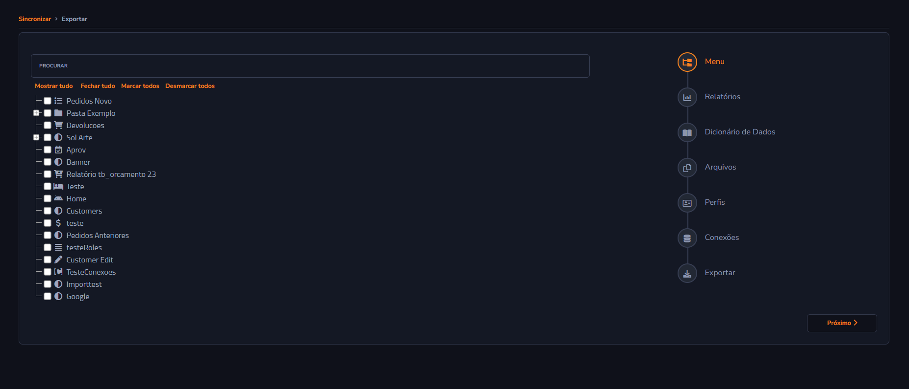
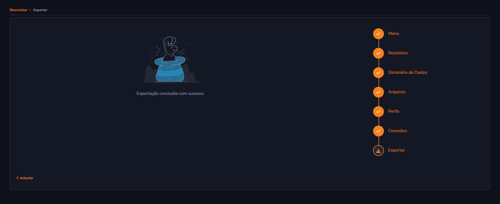
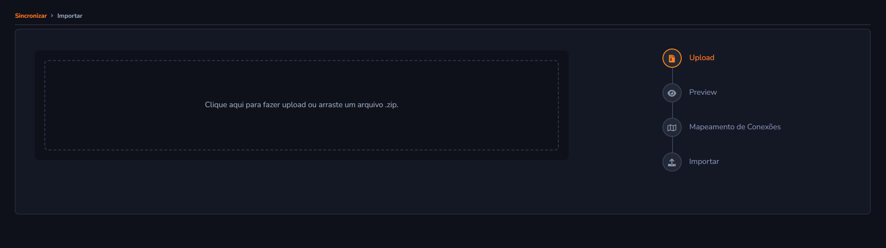
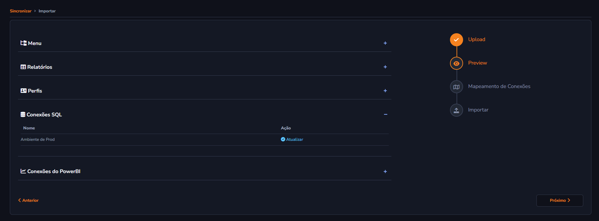
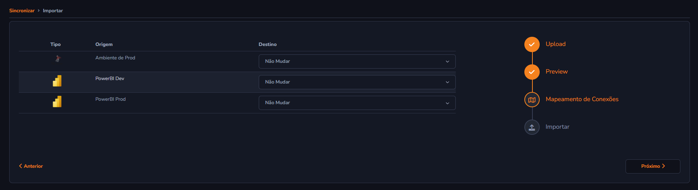
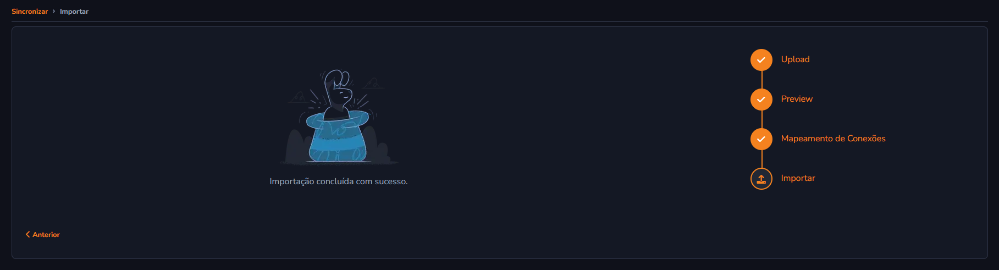

Centro de Importação e Exportação
O Centro de Importação e Exportação oferece uma maneira prática de sincronizar dados no sistema. Ele proporciona duas funcionalidades principais:
- Exportação de dados: Extração de informações do sistema para backup ou transferência.
- Importação de dados: Envio de informações para o sistema para atualização ou sincronização.
Como Funciona
Passos Gerais:
- Escolha a funcionalidade desejada:
- Exportar dados: Baixe arquivos com os dados em formatos compatíveis com o sistema.
- Importar dados: Faça upload de arquivos previamente configurados.
- Clique na opção desejada na tela inicial.
- Siga as instruções fornecidas para completar o processo.

Exportar Dados
O que é?
A Exportação de dados permite baixar informações armazenadas no sistema, sendo útil para análise, backup ou integração com outros sistemas.
Passos para Exportar:
- Clique no botão Exportar na tela inicial.
- Selecione os itens que deseja exportar (e.g., menu, relatórios, perfis, conexões).
- O sistema gerará automaticamente um arquivo
.zipcontendo os dados selecionados.
Hierarquia de Exportação
- A exportação segue uma hierarquia de dependência:
- O menu é o nível mais alto.
- Ao escolher um item do menu, todos os itens relacionados (dependentes) também serão automaticamente selecionados.
- Isso garante que os dados exportados sejam completos e consistentes.

Itens relacionados já vêm por padrão selecionados e não podem ser desmarcados. No entanto, isso não impede a seleção de outros itens.

Etapa Final de Exportação
Após selecionar os itens desejados, o processo de exportação é concluído com o arquivo gerado.

Importar Dados
O que é?
A Importação de dados permite carregar informações externas para o sistema, seja para atualizar cadastros ou integrar novos dados.
Passos para Importar:
- Clique no botão Importar na tela inicial.
- Faça o upload do arquivo no formato correto (e.g.,
.zip). - O sistema iniciará a atualização automaticamente, exibindo uma tela de Preview com os itens a serem adicionados ou atualizados.
- Revise os dados na tela de Preview para garantir que as informações estão corretas.
- Na etapa seguinte, realize o mapeamento de conexões, para garantir que os dados sejam corretamente vinculados ao sistema.
- Após o mapeamento, clique em Finalizar Importação.
- O sistema processará e validará os dados. Quaisquer erros encontrados serão notificados.

Tela de Preview
A tela de Preview permite revisar os dados a serem importados, mostrando os itens que foram adicionados ou atualizados.

Tela de Mapeamento de Conexões
No mapeamento de conexões, você associa as conexões importadas as conexões do sistema para garantir a integração correta.

Tela Final de Importação
Por fim, o sistema processa a importação e apresenta a tela final.
